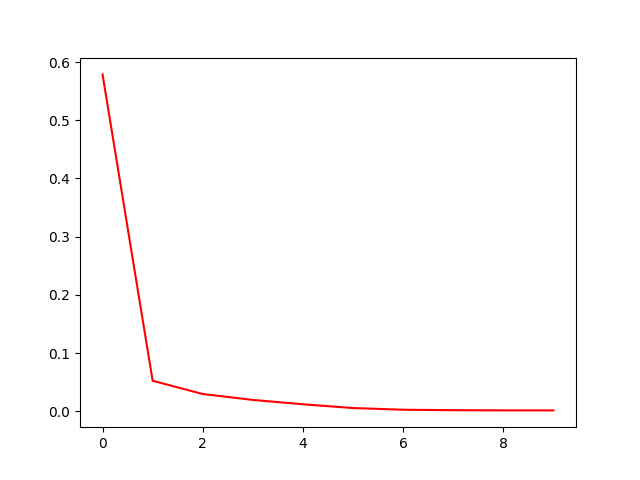

在之前的文章中我曾写到, 用户和物品的交互关系可以是一个稀疏矩阵, 我们把这个矩阵称作评分矩阵\(R_{m,n}\), 比如下面的例子, ? 表示缺失
| user/item | item_0 | item_1 | item_2 | item_3 | item_4 |
|---|---|---|---|---|---|
| user_0 | ? | 2 | 1 | 2 | ? |
| user_1 | 2 | ? | ? | 1 | 2 |
| user_2 | ? | 1 | 1 | 2 | ? |
| user_3 | 1 | ? | ? | 1 | 3 |
所以我们有评分矩阵:
\[ R_{m,n} = \begin{bmatrix} ? & 1 & 1 & 2\\ 2 & ? & ? & 1 \\ ? & 1 & 1 & 2 \end{bmatrix} \]
分解评分矩阵
如果对评分矩阵\(R\)做低秩矩阵分解（Low Rank Matrix Factorization), 既有\(R_{m, n} = P_{m, f} * Q_{n, f}^T\), 这就引申到LFM (Latent Factor Model) 隐因子模型，其中隐因子可以理解为一个用户喜欢一个商品的隐形原因，比如电影里面有他喜欢的romantic和action元素，还有他喜欢的某个演员或者导演编剧。如果另外一个电影有类似的元素跟演员，那么他很有可能会也喜欢这部电影。LFM的核心思路就是求出用户矩阵\(P\)和商品矩阵\(Q\)。
在协同过滤中我们使用item相似度做推荐的核心思想可以用下列公式表达 \[\begin{equation} \hat{r}_{u,i} = \frac{\sum_{j \in S^k(i,u)} s_{i,j} r_{u, i}}{ \sum_{j \in S^k(i, u)} s_{i, j}} \end{equation}\]
其中\(s^k(i, u)\) 代表和物品i最相似的, 并且被用户u交互过k个商品，也就是\(N(u) \bigcap S(i, k)\)，如果从LFM的角度考虑, 从评分矩阵求得对应的用户矩阵和商品矩阵, 使得\(\sum\limits_{r_{u, i}\ is\ knwon}(r_{ui} - p_u^Tq_i)^2\) 最小, 那么我们就可以用\(P*Q\) 来代替评分矩阵从而填充了那些缺失的评分值。
ALS交替最小二乘法
\[\begin{equation} \min \limits_{p*, q*} \sum\limits_{r_{u, i}\ is\ knwon}(r_{ui} -p_u^Tq_i)^2 + \lambda(||p_u||^2 + ||q_i||^2) \end{equation}\]
下面就是对上述公式求解使用ALS算法求解\(P,Q\)矩阵。查阅了一些网上的教程，可以直接化简为一般性的线性回归问题，对于\(\mathbf{X}\theta-\mathbf{Y}\), \(\theta\)的解析解为 \(\theta=(\mathbf{X}^T\mathbf{X}+\lambda\mathbf{I})^{-1}\mathbf{X}^TY\), 同理对于\(\mathbf{R}-\mathbf{X}^T\mathbf{Y}\), 当固定\(\mathbf{X}\)时, \(\mathbf{Y}=(\mathbf{X}\mathbf{X}^T+\lambda\mathbf{I})*\mathbf{X}*\mathbf{R}\), 当固定\(\mathbf{Y}\)时，\(\mathbf{X}=(\mathbf{Y}\mathbf{Y}^T+\lambda\mathbf{I})*\mathbf{Y}*\mathbf{R}^T\)
但是，我对以上做法持保留意见，在迭代过程中并没有发现RMSE随迭代减小。随后我阅读了原始的文献, 我觉得对于缺失的评分值不应该加入运算,，只会考虑有评分值得情况所对应的线性回归问题。
假设现在有一个稀疏矩阵\(R\),以及对应的\(M\), \(N\)，稀疏矩阵每次按列计算，并且只计算对应值得矩阵, 如公式\(\ref{eq3}\)所示，稀疏矩阵\(R\)第\(0\)列只在\(0\)行和\(2\)行有值, 那么我们取矩阵\(M\)的\(0\)和\(2\)行，计算线性回归\(M_{0,2}\theta_0 - R^{0}\)，可以利用正规方程法或者梯度下降法求解\(\theta_0\)，也就是\(N\)矩阵的第\(0\)行, 直到求出所有的矩阵\(N\)的向量。然后再将\(N\)固定，此时注意维度的统一需要将\(R\)转置, 求得\(M\), 如此循环往复。
\[\begin{equation}\label{eq3}\begin{split} R &= \begin{array}{cc} & \begin{matrix} 0&1&2&3&4\end{matrix}\\ \begin{matrix} 0\\ 1 \\ 2 \\ 3 \end{matrix} & \begin{bmatrix}X& & X & &X \\ & X& X& X&\\ X& X& & X& \\ & & X& X& \end{bmatrix} \end{array}\\\\ M &= \begin{matrix} & k \\ m & \begin{bmatrix} ---\\---\\---\\---\\\end{bmatrix} \end{matrix} \\\\ N &= \begin{matrix} & k \\ n & \begin{bmatrix} ---\\---\\---\\---\\---\\\end{bmatrix} \end{matrix} \end{split}\end{equation}\]
使用python实现ALS
1 | import numpy as np |
RMSE如下图: 
利用spark计算ALS
鉴于评分矩阵的稀疏性, 我们同样可以借助spark来计算，具体代码如下 1
2
3
4
5
6
7
8
9
10
11
12
13
14
15
16
17
18
19
20
21
22
23
24
25
26
27
28
29
30
31
32
33
34
35
36
37
38
39
40
41
42
43
44
45
46
47
48
49
50
51
52
53
54
55
56
57
58
59
60
61
62
63
64
65
66
67
68
69
70
71
72
73
74
75
76
77
78
79
80
81
82
83
84
85
86
87
88
89
90
91
92
93
94
95
96
97
98
99
100
101
102
103
104
105
106
107
108
109
110
111
112
113
114
115
116
117
118
119
120
121
122
123
124
125
126
127
128
129
130
131
132
133
134
135import org.apache.log4j.{Level, Logger}
import org.apache.spark.{SparkConf, SparkContext}
import org.apache.spark.sql.SparkSession
import breeze.linalg._
import breeze.numerics._
import org.apache.spark.rdd.RDD
import scala.collection.mutable.ArrayBuffer
object Als {
private var spark: SparkSession = _
private var conf: SparkConf = _
private var sc: SparkContext = _
/**
* 随机初始化 M， N
* @param m
* @param n
* @param k
* @return
*/
def initial(m:Int, n:Int, k:Int) ={
val M = sc.parallelize((0 until m ).map(x => (x, DenseVector.rand(k))))
val N = sc.parallelize((0 until n ).map(x => (x, DenseVector.rand(k))))
(M, N)
}
def getRatingMatrix() ={
val mR = sc.parallelize(List((0, 0, 1), (0, 2, 3), (0, 4, 5),
(1, 1, 1), (1, 2, 1), (1, 3, 1),
(2, 0, 1), (2, 1, 6), (2, 3, 6),
(3, 2, 1), (3, 3, 1)).map(x => (x._1, x._2, x._3.toDouble)))
val nR = mR.map(t => (t._2, t._1, t._3))
(mR.cache(), nR.cache())
}
/**
* 计算稀疏矩阵的rmse
* @param M
* @param N
* @param mR
* @return
*/
def rmse(M:RDD[(Int, DenseVector[Double])], N:RDD[(Int, DenseVector[Double])], mR:RDD[(Int, Int, Double)])={
val errRDD = mR.map(x => (x._1, (x._2, x._3))).aggregateByKey(List.empty[(Int, Double)])(_:+_, _++_)
.join(M).map(x => (x._2._1, x._2._2)).flatMap(t => t._1.map(x => (x._1, (t._2, x._2))))
.join(N).map(x => (x._2._1._1, x._2._2, x._2._1._2)) // mVect, nVec, r
sqrt(errRDD.map(x => x._1.t * x._2 - x._3).map( x => pow(x, 2)).sum() / errRDD.count())
}
/**
* 规定维度约束 M * N.t = mR 或者 N * M.t= nR
* @param M
* @param N
* @param mR
* @param nR
*/
def als(M:RDD[(Int, DenseVector[Double])], N:RDD[(Int, DenseVector[Double])],
mR:RDD[(Int, Int, Double)], nR:RDD[(Int, Int, Double)]) ={
val NN = mR.map(x => (x._1, (x._2, x._3))).join(M).map(x => (x._2._1, x._2._2))
.map(x => (x._1._1, (x._2, x._1._2)))
.aggregateByKey(List.empty[(DenseVector[Double], Double)])(_:+_, _++_)
.map{x =>
val matrixX = new DenseMatrix[Double](x._2.length, x._2.head._1.length)
val matX = x._2.foldLeft((matrixX, 0))( (z, t) => { z._1(z._2,:: ):=t._1.t
(z._1, z._2+1)})._1
val vecY = new DenseVector(x._2.map(_._2).toArray)
(x._1, inv(matX.t * matX + 0.01) * matX.t * vecY)
}
val MM = nR.map(x => (x._1, (x._2, x._3))).join(NN).map(x => (x._2._1, x._2._2))
.map(x => (x._1._1, (x._2, x._1._2)))
.aggregateByKey(List.empty[(DenseVector[Double], Double)])(_:+_, _++_)
.map{x =>
val matrixX = new DenseMatrix[Double](x._2.length, x._2.head._1.length)
val matX = x._2.foldLeft((matrixX, 0))( (z, t) => { z._1(z._2,:: ):=t._1.t
(z._1, z._2+1)})._1
val vecY = new DenseVector(x._2.map(_._2).toArray)
(x._1, inv(matX.t * matX + 0.1) * matX.t * vecY)
}
(MM, NN)
}
def iterALS(M:RDD[(Int,DenseVector[Double])], N:RDD[(Int, DenseVector[Double])],
mR:RDD[(Int, Int, Double)], nR:RDD[(Int, Int, Double)], iter:Int = 10)={
val rmse_list =ArrayBuffer.empty[(Int, Double)]
val res = (0 until iter).foldLeft( (M, N, mR, nR))( (z, b) =>{
val res = als(z._1, z._2, z._3, z._4)
val rmseVal = rmse(res._1, res._2, mR)
rmse_list.append((b, rmseVal))
(res._1, res._2, mR, nR)
})
rmse_list.foreach(println)
}
def main(args: Array[String]): Unit = {
val rootLogger = Logger.getRootLogger()
rootLogger.setLevel(Level.ERROR)
conf = new SparkConf().setMaster("local[4]").setAppName("demo")
spark = SparkSession.builder().config(conf)
.config("spark.some.config.option", "some-value")
.config("spark.sql.broadcastTimeout", "20000")
.config("spark.driver.maxResultSize", "25g")
.config("spark.sql.shuffle.partitions", "600")
.config("spark.serializer", "org.apache.spark.serializer.KryoSerializer")
.config("spark.shuffle.file.buffer.kb", "10240")
.config("spark.storage.memoryFraction", "0.2")
.config("spark.shuffle.memoryFraction", "0.6")
.config("spark.sql.crossJoin.enabled", "true").getOrCreate()
spark.sparkContext.setLogLevel("ERROR")
sc = spark.sparkContext
val initMatrix = initial(4, 5, 2)
val M = initMatrix._1
val N = initMatrix._2
val R= getRatingMatrix()
val mR = R._1
val nR = R._2
iterALS(M, N, mR, nR)
}
}
1 | (iter:0,rmse = 0.376204) |
小结
- ALS算法本质上也就是线性回归，但是要注意因为稀疏矩阵的存在导致参与计算的只有部分向量。
- 单机可以处理的情况推荐使用正规方程法，对于更大规模的数据可以使用梯度下降法。